Dr.Web
Dr.Web – это ведущий российский разработчик антивирусных
решений, предлагающий полный спектр продуктов для защиты
устройств от вредоносного программного обеспечения.
Содержание
Как же пользоваться антивирусной программой?
Рассмотрим данный вопрос на примере бесплатной утилиты Dr.Web CureIt!
Переходим на официальный сайт Dr.Web и нажимаем кнопку скачать, появляется следующее окно, которое необходимо заполнить.
После заполнения формы, на почту нам приходит письмо с ссылкой на скачивание. Обычно у Cureit буквенно-цифровое название с расширением .exe, у вас будет другое название.
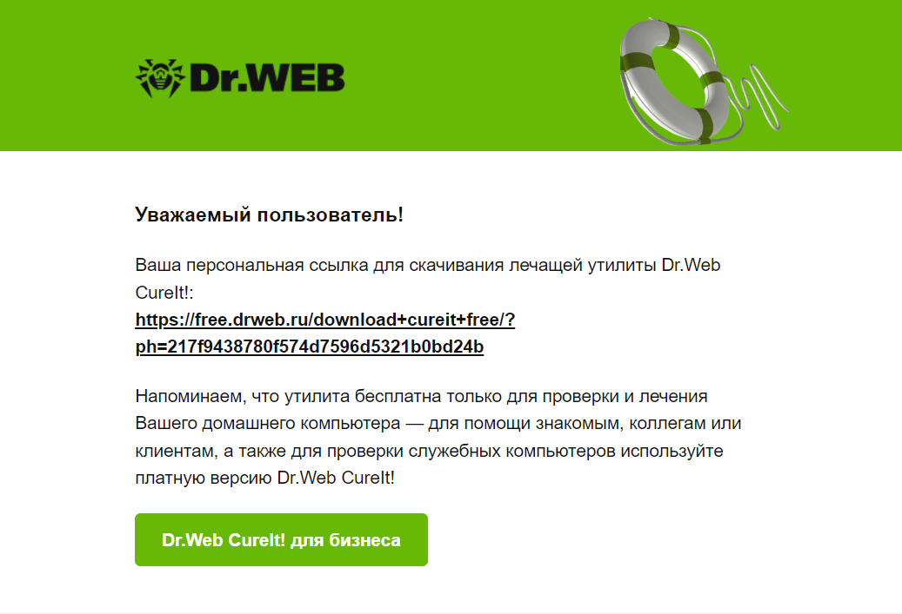При открытии программы перед нами появляется следующее окно:
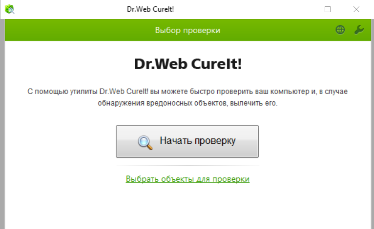В настройках программы можно поставить три быстрых галочки:
- Автоматически применять действие к угрозам;
- Выключать компьютер после завершением проверки. Например, если вы включили сканирование вечером и видите, что завершится оно еще не скоро, то данная функция вам поможет. Эта панель настроек будет доступна во время сканирования вы сможете открыть её, пометить этот пункт и сканер выключит компьютер после завершения сканирования;
- Для любителей звуковых уведомлений есть настройка «Звуковое сопровождение событий». Если антивирусный сканер найдет вирусы, он подаст звуковой сигнал.
Следующий пункт «Настройки» здесь есть несколько вкладок. На вкладке «Основные» дублируются настройки, о которых описано выше.
Также есть настройка для ноутбуков «Прервать проверку при переходе на питание от аккумулятора». При полной проверке всех объектов процессор будет загружен довольно сильно, поэтому если вы вынужденно отключили адаптер питания от ноутбука, то батарея может сильно сесть, а эта галочка поможет сохранить заряд.
«Запрещать приложениям низкоуровневую запись на жесткий диск» рекомендуется поставить, так как некоторые вирусы способны изменять главную загрузочную запись, а эта настройка поможет избежать этого.
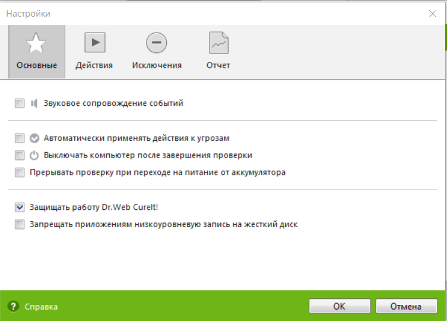На вкладке «Действия» лучше оставить настройки по умолчанию. Перемещение в карантин наиболее безопасное и обратимое действие, но вы всегда можете выбрать другие действия: «лечить», «игнорировать», «удалять». Внизу оставляем «Предлагать перезагрузку».
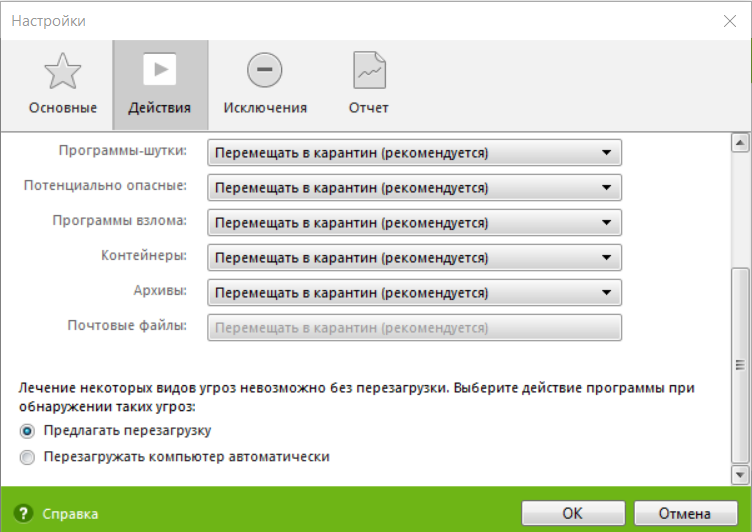На вкладке «Добавление в исключения» можно указать папку которую мы не хотим проверять совсем по какой-либо причине. Например, указываем папку «Документы» и нажимаем на кнопку «Добавить».
Путь к папке переместился в этот список. Если хотите удалить файл или папку из исключений, то достаточно просто нажать на кнопку «Удалить». Также можно проверять содержимое следующих файлов: архивов, инсталляционные пакеты.
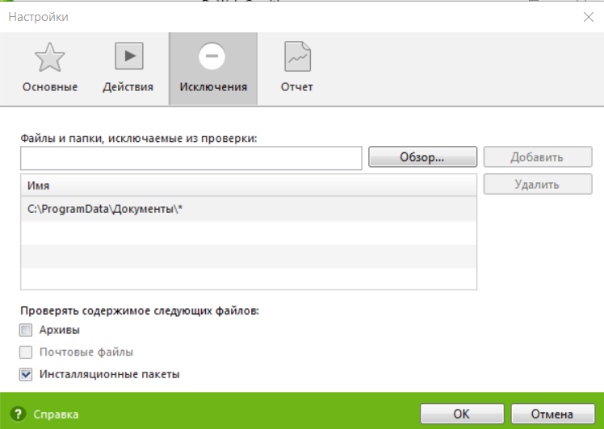Во вкладке «Отчет» можно выбрать уровень детализации отчета: стандартный и отладочный (не рекомендуется). Настройки детализации отчета оставляем по умолчанию.
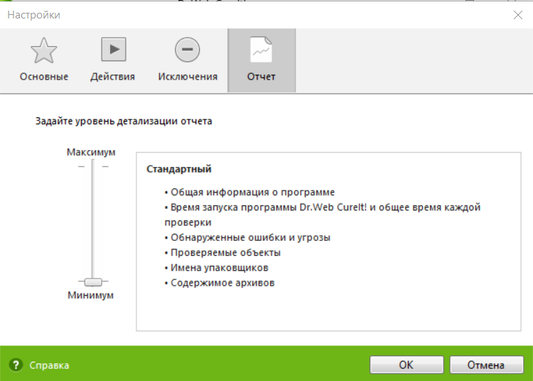Если у вас есть какие-то подозрения на вирусы замедление работы, какие-то сбои или глюки, то лучше проверить все файлы для этого нажимаем «Выбрать объекты для проверки».
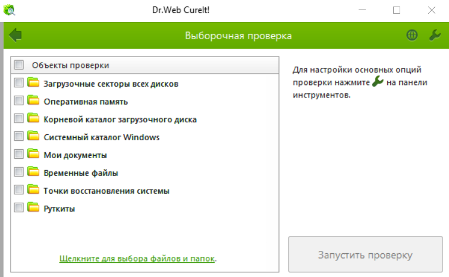Также можно запустить быструю проверку, нажав на кнопку «Начать проверку»
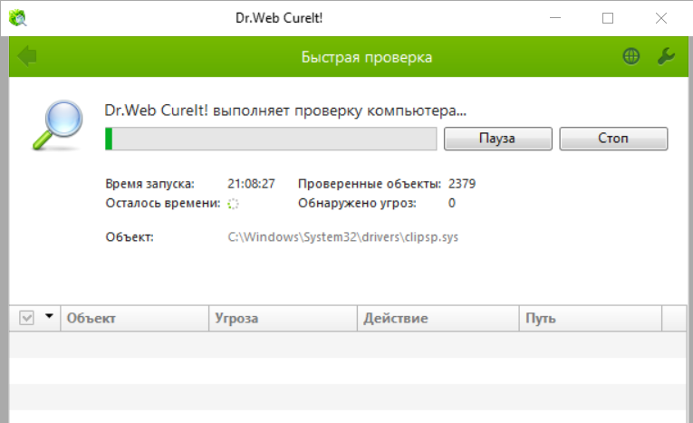Если угроз не обнаружено, то вы увидите следующее окно:
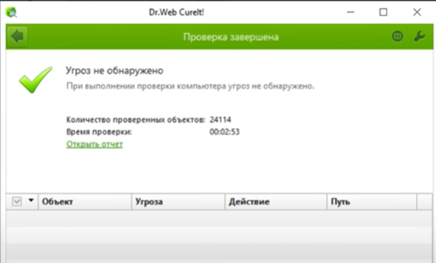Если всё же угрозы будут обнаружены, то Dr.Web предложит вылечить данные файлы или поместить их в карантин. Как обезвредить угрозы вы можете узнать здесь: https://youtu.be/Apn1q84mq4w?si=f1cE6k8pfa6VMtIQ
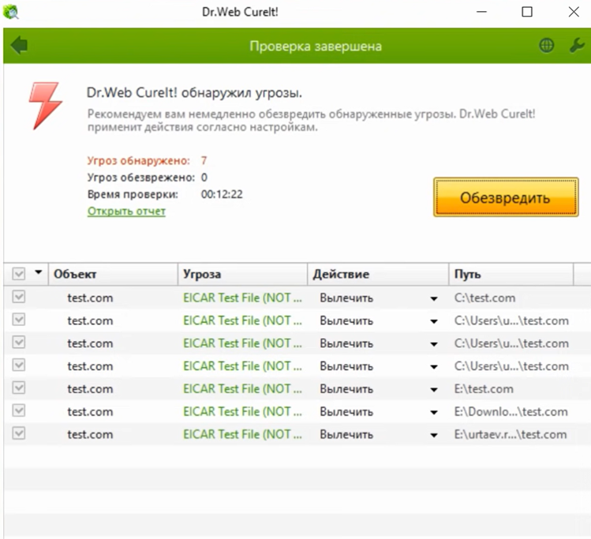Кликнув на ссылку в столбце «Угроза» вы попадете на официальный сайт Dr.Web, где сможете найти информацию о вирусе.
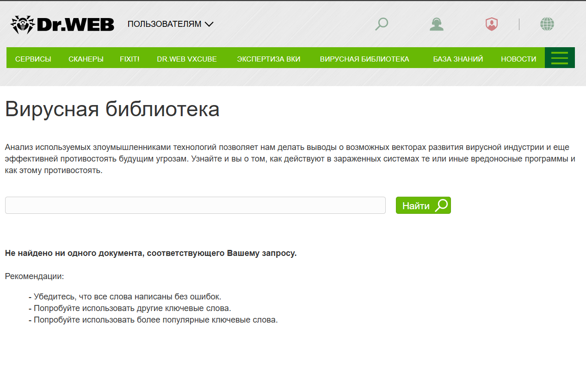Перейти на официальную страницу производителя: Dr.Web